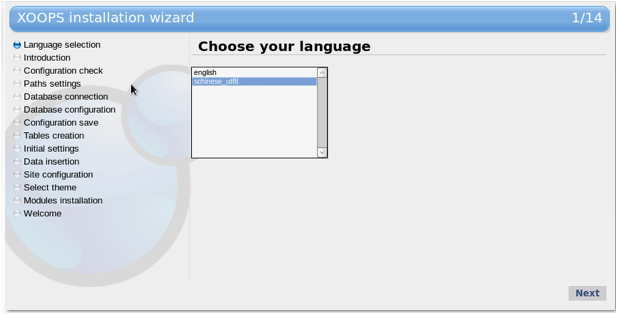
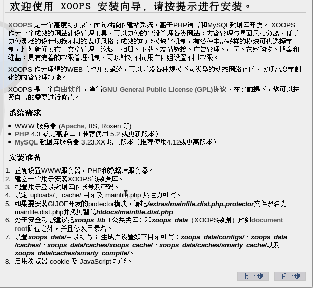
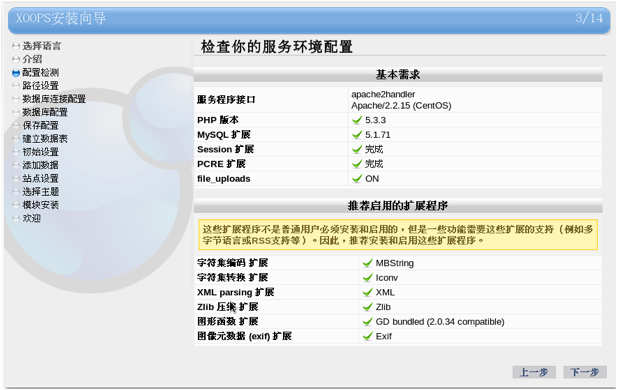
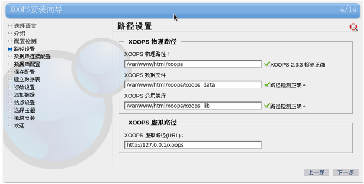
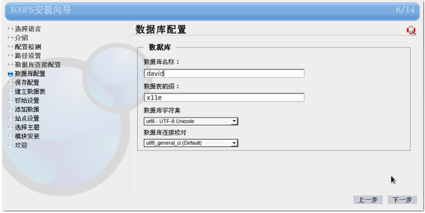
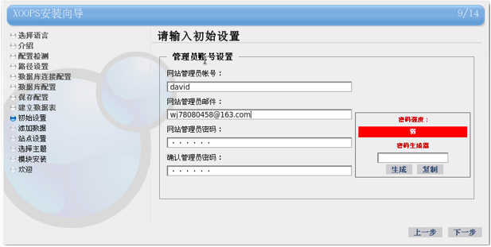
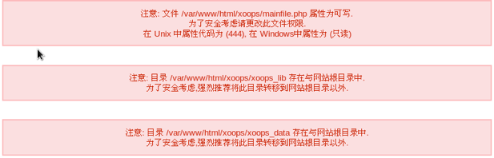

XOOPS
XOOPS是一款用php制作的开源网站管理系统，可用于构建各种网络站点。
1、下载XOOPS软件（https://xoops.org/）
2、将XOOPS软件中的htdocs文件夹拷贝到apache的网页根目录“/var/www/html/”，重命名为“XOOPS”。
|
|
3、安装。在浏览器输入“127.0.0.1/xoops”，进入安装界面
1）选择语言，汉语

2）用户要读一下“安装准备”，以免出错

3）这一步看清楚对php和mysql的版本需求，保证本机的php环境满足要求

4）检测路径

5）设置数据库的用户名和密码，用来连接数据库。

6）设置数据库名称

7）设置管理员账户和密码，用来管理网站

4、安装完成后，在管理后台会看见有下面的警告

5、移动xoops_lib和xoops_data目录，并修改配置文件。一下的修改是为了消除上面的警告
|
|
6、在浏览器输入“127.0.0.1/xoops”，这样就可以访问xoops了。用户名和密码在安装的时候就已经指定了
Copyright@david zhytwj2018@163.com